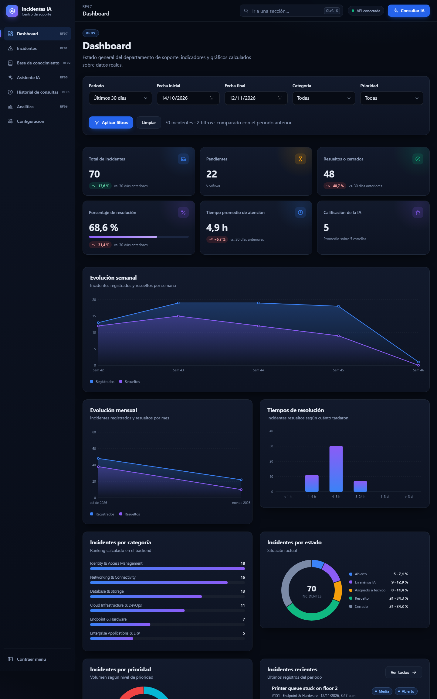
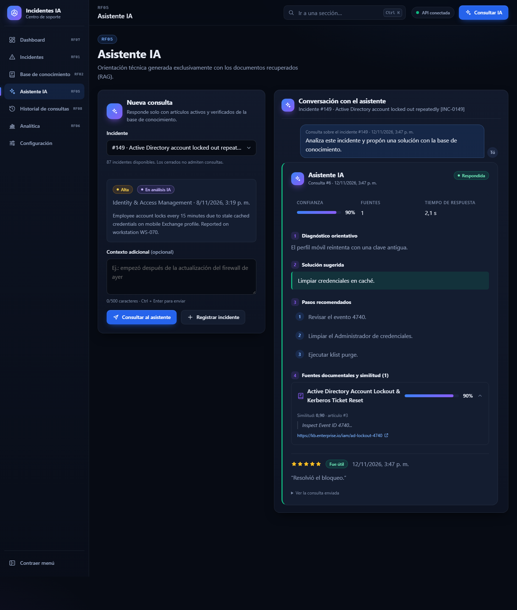
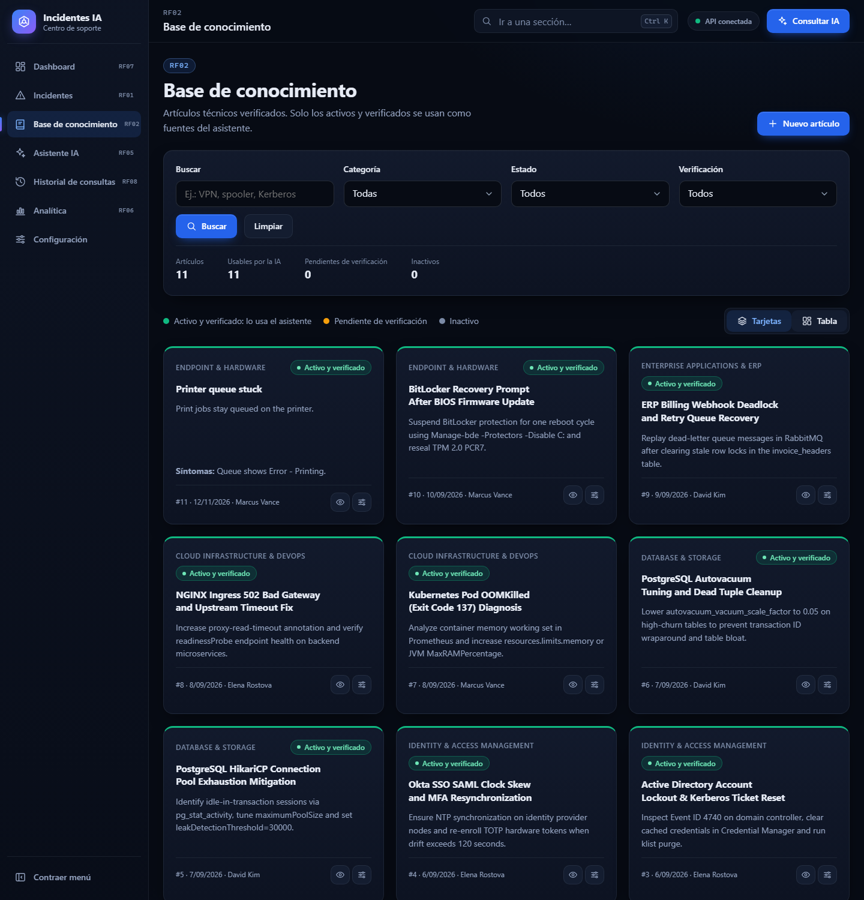

Sistema inteligente de análisis de
incidentes tecnológicos y asistencia mediante IA
Gestión de incidentes, base de conocimiento verificada, analítica con SQL y un asistente RAG que responde solo con fuentes documentadas.
El soporte técnico resuelve los mismos problemas una y otra vez
El conocimiento para resolverlos existe, pero está disperso. Un asistente que lo recupere y lo cite acelera la atención sin inventar soluciones.
Requisitos funcionales cubiertos
| RF | Funcionalidad | Componente |
|---|---|---|
| RF01 | Registro, consulta y estados de incidentes | API + módulo Incidentes |
| RF02 | Base de conocimiento: problema, síntomas, causa, solución, verificación | API + módulo Conocimiento |
| RF03 | Indexación de artículos verificados en Qdrant | n8n · flujo 01 |
| RF04–05 | Búsqueda semántica y asistente RAG con fuentes y similitud | n8n · flujo 02 + Asistente |
| RF06–07 | Indicadores con SQL y dashboard con filtros | Analítica + Dashboard |
| RF08 | Historial de consultas y calificación de 1 a 5 | Historial |
El frontend solo habla con Spring Boot
HTML · CSS · JS⇄ Backend Spring Boot
API REST · JPA⇄ PostgreSQL
- Cada consulta queda registrada: Pendiente, Respondida, Sin resultados o Error.
- n8n vuelve a validar en el backend que cada fuente siga activa y verificada antes de usarla.
- Claves y tokens solo en variables de entorno y credenciales de n8n.
Indicadores reales, filtros y comparación temporal

Respuestas estructuradas y respaldadas por fuentes

- Diagnóstico, solución sugerida y pasos en secciones separadas.
- Fuentes desplegables con el valor real de similitud.
- Si no hay fuentes relevantes: "Información insuficiente", sin inventar una solución.
- Errores de n8n con su motivo; nunca una respuesta simulada.
- Calificación de 1 a 5 estrellas guardada en la base.
Solo el contenido verificado llega a la IA

Lo que muestran los datos
Pendientes por semana
Horas promedio por prioridad
Cuatro hallazgos respaldados por las consultas SQL
1. Retraso reciente oculto
Los pendientes pasan de 0 a 8 por semana; noviembre va en 52 % resuelto. El 86,67 % global no lo muestra.
2. La prioridad no acelera
Los críticos tardan 5,13 h frente a 4,30 h de los de prioridad baja. Hace falta un SLA por prioridad.
3. Documentar es lo más rentable
10 problemas son el 85,3 % del volumen, con solo 10 artículos verificados. Un artículo por problema recurrente amplía el alcance del RAG.
4. La IA promete, la muestra es pequeña
4,75 estrellas y 0,915 de similitud promedio, pero en 4 respuestas. Hay que seguir calificando.
Probado de punta a punta
- Reglas de negocio: incidentes cerrados, una sola calificación por respuesta, verificación de artículos, rangos de fechas.
- Seguridad de la integración: token del webhook y
X-Callback-Tokenen los callbacks. - Accesibilidad: teclado, foco visible, lectores de pantalla y
prefers-reduced-motion.
Trabajo por ramas e integración
| Rama | Responsable | Alcance |
|---|---|---|
mafe | Mafeqm | Backend, modelo de datos, datos iniciales |
dev-Lisseth | lissethkatherine | Flujos n8n de indexación y RAG |
devsergy | velascodazasergio-png | Frontend e integración frontend ↔ backend ↔ n8n |
main | Equipo | Integración final |
Commits con Conventional Commits. El uso de IA en el desarrollo está documentado en AI_USAGE.md.
Del prototipo a producción
- Conectar OpenRouter con las claves del equipo e indexar la base de conocimiento.
- Documentar y verificar un artículo por cada problema recurrente.
- SLA por prioridad y alertas por antigüedad de los pendientes.
- Autenticación de usuarios y paginación en el servidor.